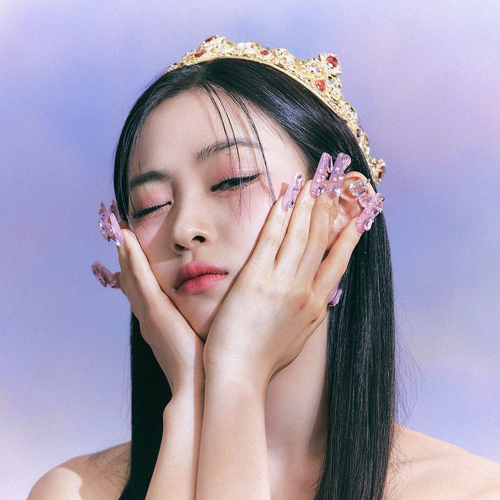
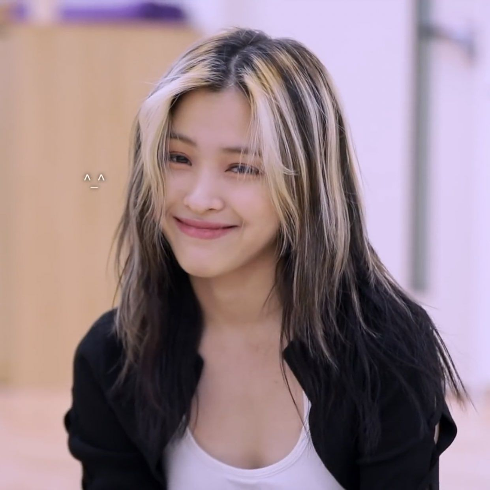

Главный рэпер, ведущий танцор, вокалист, центр группы - всё это Рюджин
 Исполнитель песен Шин Рюджин родилась 17 апреля 2001 года.
По национальности кореянка, у нее два питомца – котята Бьюли и Далли, рост 163 см. Рюджин одержала победу в шоу «Mixnine», снималась в клипах «BTS», что обеспечило ей путь в «JYP». В 2017 году снялась в фильме «Король», участвовала в шоу на выбывание «Stray Kids». Знаменитый корейский певец и генеральный директор «YG Entertainment» предложил ей сотрудничество, но девушка предпочла работать с «JYP», стать участницей «ITZY». Стажировалась Рюджин в течение 4 лет. Сегодня учится на хореографическом факультете школы Hanlim. Комнату в общежитии делит с Йеджи.